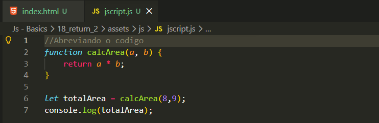
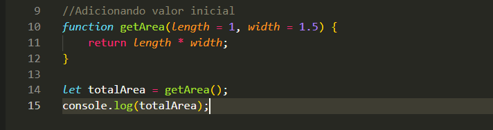

Return part 2
Intro
Entendendo melhor return, iremos estar nos familiarizando melhor com a palavra chave return.
Entendendo melhor return, iremos estar nos familiarizando melhor com a palavra chave return.
Algumas formas onde pode acabar dando erro em nosso codigo com uso de return é quando acabamos nao definimos o retorno, um exemplo da aula passada seria return area se usarmos apenas return teremos como resultado undefined.

Uma opcao que temos em nosso parametro, e podermos passar um valor inicial e caso seja adicionado um valor, esse valor inicial e substituido pelo valor passado, ficando da seguinte forma em nosso codigo:
